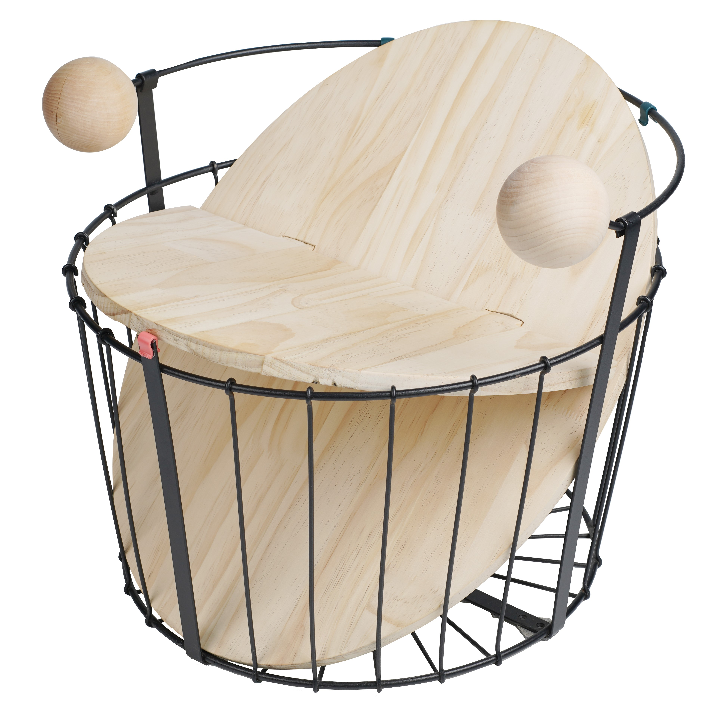
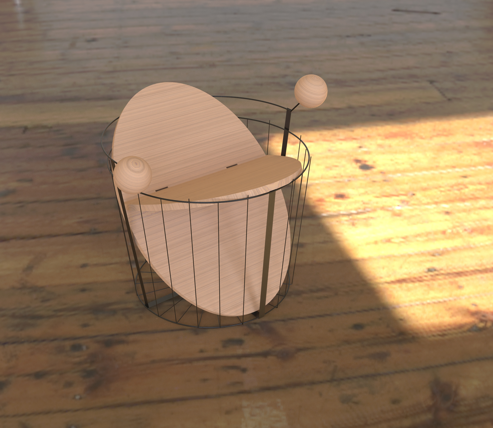

BASKET Stool


用轻盈的造型做出稳定的结构，用硬质的材料给人舒服的感受。整体采用木材插接的方式实现站立，凳面的夹角是根据人体工学的较为舒适的110°左右，把手的圆球设计采用拟人的语言，给人“邀请”的感觉。
In the stool, stable structure is made with light shape and comfortable feeling is created by hard materials. The stool adopts wood insertion from top to bottom to achieve standing. The angle of stool surface is adjusted to about 110° which is more comfortable according to the ergonomics. Two handles are designed into globes which represent the meaning of ‘invitation’ in anthropomorphic language.